PrayerNestThis Privacy Policy explains how PrayerNest collects, uses, stores, and shares information when you use the app.
When you generate a prayer, you may provide a written reflection about your day and choose a prayer focus. PrayerNest may save your reflection, generated prayer, favorite status, date, and related journal information.
PrayerNest may create an anonymous Supabase account when you use features such as prayer generation. This helps the app maintain usage counts and app state without requiring you to sign in first.
For free users, journal entries may be stored locally on your device using device storage. Local data can be removed if you delete the app, clear app data, or reset local storage.
If you become a Premium user, PrayerNest may upload journal entries and related account information to Supabase so your journal can be backed up and transferred across devices.
PrayerNest may store usage information such as AI generation counts, complimentary prayer counts, rewarded ad counts, and monthly usage periods to provide free, rewarded, and Premium features.
PrayerNest uses RevenueCat to manage subscriptions, purchases, restores, and Premium entitlement checks. RevenueCat may receive purchase history, app user identifiers, device information, and subscription status needed to provide these services. Payment information is handled by the applicable app store, not directly by PrayerNest.
PrayerNest sends the reflection text and selected prayer focus needed to generate a prayer to an AI service. Avoid entering highly sensitive personal information that you do not want processed for prayer generation.
If you enable reminders or streak celebrations, PrayerNest may schedule local notifications on your device. You can change notification settings in the app or through your device settings.
PrayerNest may add ads or rewarded ads in the future. If ads are enabled, advertising partners may process device, usage, or advertising-related information as needed to show ads, measure performance, prevent fraud, and comply with law.
We use information to provide prayer generation, journal storage, Premium backup and sync, subscription management, usage limits, notifications, app support, troubleshooting, safety, security, and service improvement.
PrayerNest may share information with service providers that help operate the app, including Supabase for authentication and database storage, RevenueCat for subscription management, AI providers for prayer generation, and future advertising partners if ads are enabled.
Local data remains on your device until you delete it, clear app data, or uninstall the app. Cloud data may be retained while your account or Premium backup is active. To request deletion of cloud data, contact teamtaptonic@gmail.com.
We use reasonable technical and organizational measures to protect information. No method of storage or transmission is completely secure, so we cannot guarantee absolute security.
PrayerNest is not intended for children under 13. If you believe a child has provided personal information, contact us so we can review and delete it where appropriate.
We may update this Privacy Policy as PrayerNest changes. Continued use of the app after updates means the revised policy applies.
Questions or deletion requests can be sent to: teamtaptonic@gmail.com.